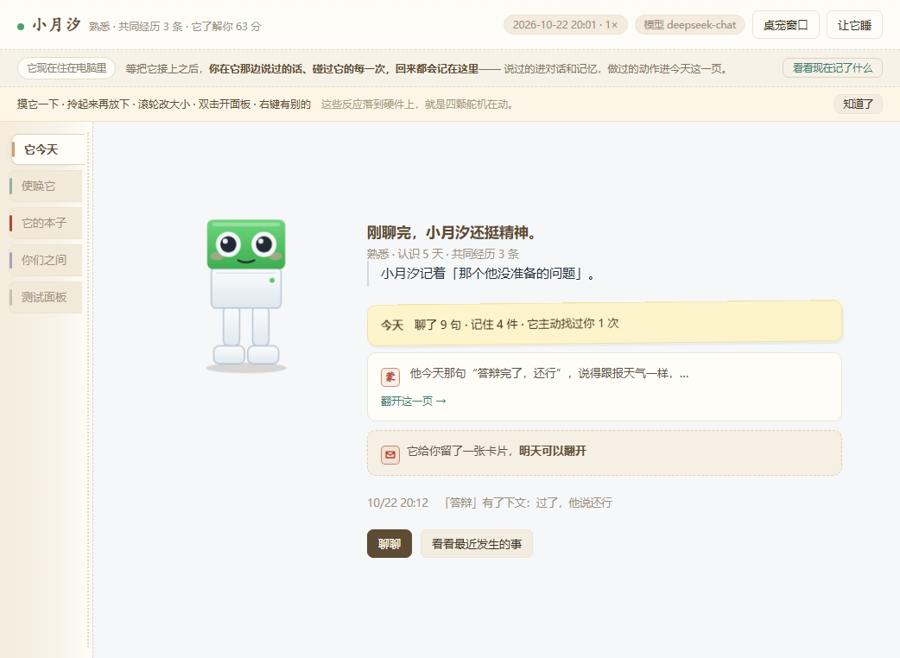

OTTO · 桌面陪伴机器人
把记忆做成可以翻的东西
设计上的第一道坎是：“它记得我”这句话，用户凭什么相信？记忆存在模型里，用户看不见，所以这句承诺本身没法验证。这是我后面所有功能的出发点——把看不见的记忆变成看得见的东西。
它每天写一页日记。日期旁边那个红印章，是它给这一天挑的一个字；正文是它写给自己看的，不是写给我的；底下写着这一天它记住的几件事。

这些记录的存在意义只有一个：用户不需要相信它，自己翻就行。
把记忆做成可以翻的东西06 / 13
一个住在电脑桌面上的陪伴机器人。
软件已完成，实体机器人待落地。
这个项目的起点是一个很具体的观察：桌面上已经有足够多的效率工具，但没有一个东西知道你昨天经历了什么。
我看了一圈 AI 陪伴类产品，发现它们有个共同的短板——都把力气花在“回答得更好”上，可回答完就结束了。用户关掉窗口，这段对话就没了，第二天从零开始。这样的产品可以很好用，但很难让人产生关系。
所以我做的不是一个更聪明的助手，是一个会积累的小东西：它记住你说过的话、记住你们之间发生过的事，并且用日记、卡片这些看得见的东西把这段历史存下来。它的价值不在某一次回答的质量，在它记不记得你。
下周四答辩。
—— 我随口说了一句，它记下了。
周四晚上，它自己来问：那个答辩，过了吗。
别的聊天机器人在我说完那句话之后就没有下文了。它会记着，过几天自己回来问——这是它和普通聊天机器人最直接的区别。

长时间待在电脑前的人——学生、自由职业者、远程办公的人。他们不孤独到需要求助，但每天有大段时间是一个人待着。
他们不想要一个需要照顾的东西（养宠物要喂要遛，交朋友要回消息），也不想要一个只在有事时才打开的软件。
这个产品的场景是“余光场景”：不是专门打开来用，是在电脑前干活的时候它就在旁边。所以它不能要求你停下手上的事——这也是为什么它日常的表达主要靠身体动作，不靠让你读一段话。
它要争的不是屏幕中央那几秒，是屏幕右下角那一小块地方——你在干别的，它还在。
它在动、在嘟囔，你瞥一眼就收到了
点一下、拎起来再放下，一个动作就够
打字，最贵的一档，只在真的想说话的时候用
最贵的那一档不该是产品的门面，所以我把聊天框从第一屏拿掉了。
这一页放在前面，因为它比“我做了什么”更能说明我的判断。
这些做法都能把数据做好看，但代价是用户会看穿机制——一旦被看穿，前面那些真东西就全废了。
软件是它的记忆和人格，硬件是它的身体和存在感。现在先把软件跑通，硬件后配——这样即使硬件还没做，它的记忆已经在积累了。
这条链路上每一环都能单独关掉做对照——验证那一页的 A/B 就是关掉第一环。
设计上的第一道坎是：“它记得我”这句话，用户凭什么相信？记忆存在模型里，用户看不见，所以这句承诺本身没法验证。这是我后面所有功能的出发点——把看不见的记忆变成看得见的东西。
它每天写一页日记。日期旁边那个红印章，是它给这一天挑的一个字；正文是它写给自己看的，不是写给我的；底下写着这一天它记住的几件事。
这些记录的存在意义只有一个：用户不需要相信它，自己翻就行。
你们说过的话、它做过的每一个动作，在“关系记录”里原样保留，一个字不加工，用户可以自己核对。
它还会给我留一张卡片，但要过一天才能翻——当天就能拆，就不像“这一天过完了”。日记也有门槛：那是它自己的东西，按关系深浅一层层给我看。

这一层解决的是分寸。如果所有东西都随时可查，它就从“一个有自己的世界的东西”，退化成一个数据库。
被动交互的产品有个死结：你不说话它就不存在。可陪伴产品的日常，恰恰是没什么可说的那些日子。
所以它有两件事是自己做的。一件是记着我提过的、以后会发生的事，到时间自己来问；另一件是没事的时候自己嘟囔一句，不需要我回应。日常用手感跟它互动——摸一下、拎起来再放下，反应各不相同。
它现在有三十多个动作。以后接上实体机器人，同一套动作会直接换算成四个舵机的角度发下去，不用重做。
先给它起名字，默认叫小月汐。第一次相处是对话，不是填问卷——它问你四个问题（我平时安静点还是常来晃一晃、我要不要有自己的看法、你难受的时候我该不该问、我叫你什么），你随口答，它照着长。晚上它会写第一页日记。
摸索。你会摸它、把它拎起来又放下、说几句没什么用的话。它开始记住一些事。你随口提过的“下周四答辩”，被它单独记了下来——这是后面那件事的伏笔。
第一次往回看。卡片过了当天才能翻开，日记也要等它愿意。你第一次翻到它前几天写的东西，会知道这几天它在注意什么。这是用户第一次从“用”变成“看”。
它开始主动。你之前提过的那件事到了时间，它自己来问结果。你回它一句，这件事就变成你们之间的一条共同经历。很多用户是在这一步第一次意识到“它是真的记得”。
你什么都没说。它自己嘟囔一句，不需要你回应。
这条流程里有三个刻意的设计：卡片等一天、日记按关系深浅解锁、它主动开口的次数比你以为的少。三处都在做同一件事——让你偶尔想知道它那边怎么样了。方向是“你想去看它”，不是它催你。
理由很实在：陪伴产品如果长得像一个控制面板，用户对它的预期就从“相处”变成“使用”，后面所有设计都会被这个预期拖回去。
整个面板是纸的颜色。左边一条装订边，五个页签像索引贴纸一样竖着贴，当前那一页的页签往外探出一点。日记页做成手账，一天一页，一共五种版式，连着两天不能用同一个。

绿色的头加白色的身体，眼睛就是那两个传感器，没有手；腿和身体是主要表达方式，三十多个动作各有各的姿势。漫画符号（心、Z、问号、音符）只在它自己出声的时候出现，不随便贴。
道具做了 32 个，都是桌面上会出现的东西：台灯、水杯、键盘、月亮、创可贴。模型只负责挑“哪个道具、放哪个格子”，不自由画图——试过让它画，形变和风格漂移全来了。
现在只做了软件，但硬件接口已经定下来了：四个舵机（头部、左腿、右腿、前倾）+ 一个蜂鸣器 + 一颗指示灯。软件把它的动作换算成角度往下发，一帧数据长这样：
{ "action": "探头观察", "servos": { "头": 88, "左腿": 96, "右腿": 104, "前倾": 86 }, "灯": "绿", "蜂鸣器": "—" }

一是表情在硬件上不存在。实体机器人没有屏幕，而“开心”“委屈”这类动作只有眼睛和嘴会变——实体上一个都看不出来。所以每个动作都标清楚了在硬件上能看见多少，看不出来的部分只能靠姿态、灯光和声音补。这件事不提前定，硬件做出来会少一半表达。
二是动作库不用重做。屏幕上它摆的姿势和舵机的角度用的是同一份数据，硬件落地照着接就行——软件先把动作想清楚，硬件照着动。
一开始我打算这样验收：让测试者用几天，然后问他“你觉得它记得你吗”。标准写完我自己就发现它不成立——我去问的时候，他一定会说记得。
所以我把通过标准改成：他自己主动提起来才算数。我不问，我看他会不会说。这条标准反过来影响了整个设计——证据必须由它主动给，不能靠引导问出来。
我不问，我看他会不会说。
所以我没写“验证成功”。现在的状态是链路跑通了，还没放人进去。
做之前我以为陪伴产品拼的是把 AI 做得更聪明、更像人。做完这两周我改了：难点是三件事——用户凭什么相信它记得、感觉不到它在的时候怎么办、他为什么要回来。这三个问题没有一个能靠“回答得更好”解决。
我是工业设计背景，习惯从造型和交互入手。这次我花时间最多的不是画界面，是给“写得好”定出能算出来的规矩——因为“要写得像人话”这种要求只靠感觉没法验收，模型也不吃这一套。最后做成一道闸门：生成完按规则查一遍，不过关就把它自己的毛病念回去重写。日记那条链路我推翻过五版。